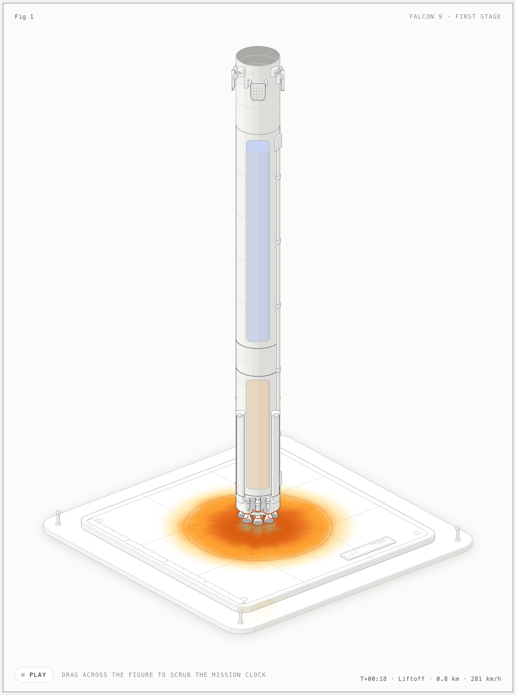

anatomy-figures
Interactive isometric figures that explain how machines work. Built with Claude Code and the anatomy skill: one prompt per figure, a pure model driving every moving part, SVG painted in depth order with a WebGL layer for plumes and steam. Drag, press keys, or just watch the idle tour. Source and prompts: github.com/jpruiz114/anatomy-figures.
How these were made
Claude Code with the anatomy skill, installed with the skills CLI:
npx skills add https://github.com/wheresryan22/anatomy --skill anatomy
The installer writes to .agents/skills/anatomy; Claude Code reads .claude/skills/, so a symlink and /reload-skills made the command available:
ln -s ../../.agents/skills/anatomy .claude/skills/anatomy /reload-skills
Then one prompt per figure, exactly as shown on each card. Nothing else was specified: the object, camera, parts list, model, shaders and checks are the skill's workflow applied by the agent. Four of the five are Epic subjects built as their Hero cut; each figure's README lists what the full version would add.